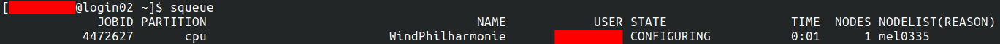
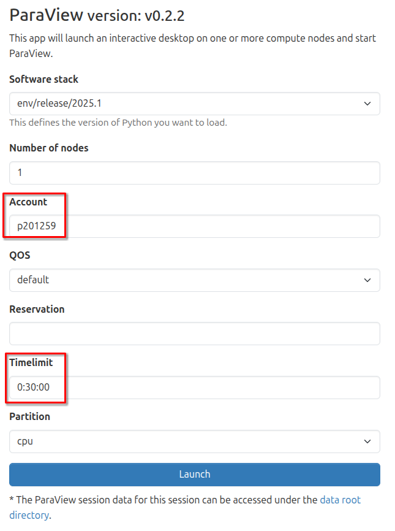
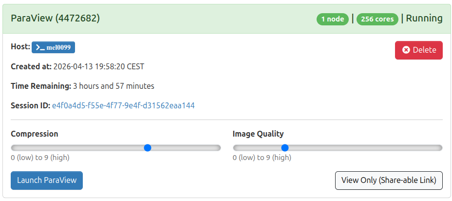
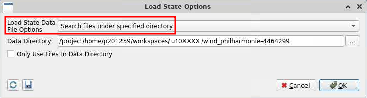

Hands-on: Urban wind simulation and visualization¶
{kind=link}
In this part, you will get a quick overview of a typical High-Performance Computing (HPC) workflow. You will work with a simplified yet realistic example of a Computational Fluid Dynamics (CFD) simulation focusing on the urban wind patterns around the Philharmonie of Luxembourg.
This hands-on workflow is specifically designed for you to practice the essential steps involved in modern scientific computing: accessing the system, submitting parallel jobs, and post-processing large datasets. Through this exercise, you will learn the different ways to interact with and utilize the resources of the MeluXina supercomputer, gaining practical experience in a real-world HPC environment. You will complete the following steps:
- Step 1: Submit a batch job for a parallel CFD simulation and monitor its execution
- Step 2: Visualize and post-process the simulation result interactively
- Step 3: Download the final post-processed results on your laptop
▶️ Submit of a parallel CFD simulation & monitor execution¶
The execution of large parallel computing jobs in High-Performance Computing (HPC) environments is almost exclusively performed in non-interactive mode, commonly referred to as batch mode, utilizing a dedicated submission script. Unlike interactive sessions where a user directly controls the computation in real-time, batch jobs are submitted to a job scheduler (such as Slurm) and placed in a queue. The system then manages the allocation of necessary resources—such as CPU cores, memory, and time—and initiates the execution once the requested resources become available.
This approach offers significant flexibility and efficiency for complex simulations:
- Resource Optimization: It ensures that shared computing resources are utilized optimally by running multiple jobs in parallel or sequentially without manual intervention.
- Decoupling Execution from User Presence: Crucially, the user does not need to maintain an active connection during the execution phase. This allows heavy computations, which may take minutes or even hours, to proceed in the background without tying up a user's terminal or internet connection.
- Flexibility: Jobs can be scheduled to run at any time, including nights, weekends, or periods of lower system load, ensuring that critical research tasks are completed without disrupting active users.
This submission process is initiated and managed via a standard shell access environment through a command-line terminal.
Shell Access¶
👉 Open a shell on MeluXina supercomputer.
Tip
You can use your preferred method among the two options configured in the previous part:
Once connected, you should see the MeluXina welcome banner:

HPC Job Submission¶
A submission script for Slurm has been prepared for you to easily run this parallel HPC simulation.
👉 Submit the simulation job using the following command:
Using the command line
To avoid mistakes, simply copy the line above and paste it in the MeluXina terminal. Then press Enter to execute the command.
If successful, you should see something like this:
Details of the submission script
You can quickly inspect the content of submission script using the cat command 🔎
- The
#SBATCHdirectives specify the configuration of the Slurm job. - Setup the software environment, in this case you use OpenFOAM.
- Prepare simulation input: copy from a template and decompose input for parallel execution
- Run the OpenFOAM simulation in parallel
Running with more processes?
You feel playful and want to run the simulation with more parallel processes? 🧑🔬
You can specify options on the command line to override the values of the script. For example, you can add --ntasks 32 to run the simulation with 32 parallel processes:
sbatch --ntasks 32 /project/home/p201259/materials/14April_GettingStartedWithMeluXina/wind_philharmonie/run.sh
Keep in mind that:
- Resources are shared and limited during the training.
- There are limitations on the number of processes you can run on a single compute node.
- Using more processes does not systematically mean a faster execution. In this case, reconstructing the parallel output might actually be slower.
Execution monitoring¶
Your HPC job is now queued on the MeluXina supercomputer and is waiting for available compute resources. To keep track of its progress, you can monitor its status in real-time using the Slurm command-line interface tool squeue. This command lists your active jobs along with key details such as the job ID, the number of resources allocated, the current state of the job, and the node it is running on (or will run on). By running this command periodically, you can verify that your job is accepted by the scheduler, observe its transition from "PENDING" to "RUNNING," and eventually confirm its completion.
👉 Run the squeue command to see the status of your job:
About the job state
The output of squeue shows information about your current jobs in the queue:
{kind=link}
The STATE field indicates the current status of the job. It typically goes from:
flowchart LR
PENDING --> CONFIGURING --> RUNNING
RUNNING --> COMPLETED
RUNNING --> FAILEDAfter some time, the finished jobs (i.e., COMPLETED or FAILED) disappear from the list.
👉 Monitor the execution of your job until it is finished. Then you can continue to the next step.
▶️ Analyze and post-process the simulation output¶
Once the execution of the simulation is complete, the raw computational data becomes accessible for detailed analysis and interpretation. This transition from raw simulation output to meaningful visual insights is performed interactively using the ParaView visualization software.
To facilitate this process within the HPC environment, ParaView is launched directly from the MeluXina web-portal, allowing you to interact with the graphical interface in real-time from your local browser. This setup enables you to visualize complex flow fields, such as the urban wind patterns around the Philharmonie, without needing to install heavy software locally, manage complex remote display configurations, or even download the data to your laptop.
Open ParaView¶
👉 Start the MeluXina web-portal: https://portal.lxp.lu/.
👉 Open the ParaView application.
- Click on the ParaView application on the web-portal.
- Use the settings defined below and click the Launch button.

- Wait for job to run and then click the Launch ParaView button as shown below.

{kind=link}
{kind=link}
You now have the ParaView software running on a remote MeluXina compute node. Its graphical interface is streamed in real time to your laptop via the web browser, allowing you to interact with the visualization locally as if the application were installed on your machine. While the experience is generally smooth, please be aware that high network latency or a busy Wi-Fi connection may introduce slight delays or reduced responsiveness during complex interactions.
Load the simulation results¶
Now, open the results of the urban wind simulation in ParaView to explore the simulated wind streamlines, pressure distributions, and velocity fields around the Philharmonie of Luxembourg. This interactive session allows you to inspect the high-resolution data generated by the HPC job, offering a visual insight that would be difficult to grasp from raw numerical output alone.
👉 In the ParaView menu File, click on Load State....
{kind=link}
Finding your simulation results
- Navigate through your files to locate the results of your simulation.
- They should be located in
/project/home/p201259/workspaces/u10XXXX/wind_philharmonie-447ZZZZ, withu10XXXXbeing your actual username;447ZZZZbeing the job ID of your submitted job.
- In this directory, open the file named
philharmonie.pvsm.
Then, make sure to use the settings below and click OK.

{kind=link}
A simple 3D model of the Place de l'Europe and of the Philharmonie will open. It will show the simulated wind streamlines and wind velocity. You can change the view, zoom-in and zoom-out to explore the simulation output.
{kind=link}
Return to a clean state
After many changes, maybe you will want to reset the view. In this case, the easiest is to go in the Edit menu and click on Reset Session. Then you can load the simulation results again to restart from a clean state.
Create a video of the results¶
To effectively communicate the dynamic nature of the urban wind simulation, you can generate a video recording that captures the movement of wind streamlines and velocity fields around the Philharmonie of Luxembourg. This visual summary transforms the static 3D model into an animation, making the complex fluid dynamics easier to interpret and share.
Once you have explored the simulation results, you can create this video directly within the ParaView interface.
👉 In the Paraview menu File, click on Save Animation...
{kind=link}
Follow the settings below:
- Remember the directory in which you save the animation.
- Use a meaningful filename, e.g.,
philharmonie-wind-meluxina.avi. - Select the file type FFMPEG AVI.
{kind=link}
In the animation options, use a frame rate of 5 images per seconds.
{kind=link}
ParaView will now take a bit of time to generate all the frames of the video and save it.
▶️ Download the final output¶
After the animation generation completes, the resulting video file is permanently stored on your MeluXina data storage. This file remains available for retrieval and can be accessed by using the file explorer provided within the web-portal to navigate through your directories and initiate the download process.
👉 Download the video of the simulation results to your laptop.
In the MeluXina web-portal, use the menu Files and select /mnt/tier2/project/p2021259 to explore your project directory.
{kind=link}
Navigate through your files and open the directory that you used earlier to save the animation.
{kind=link}
Finally, scroll down through the list of files and find the video. Click on the video to download it to your laptop and watch it.